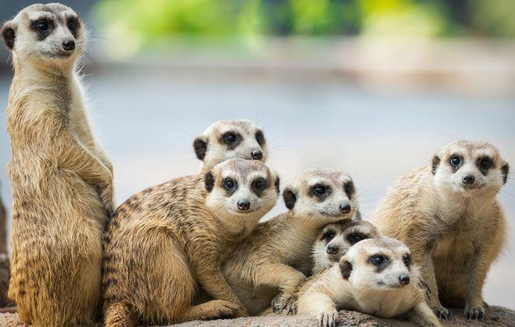
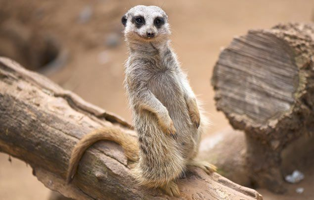
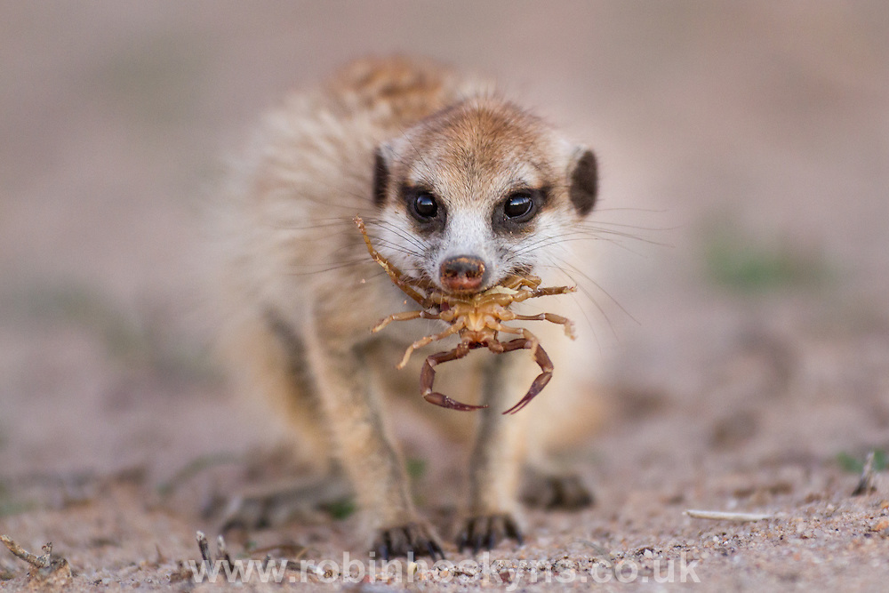
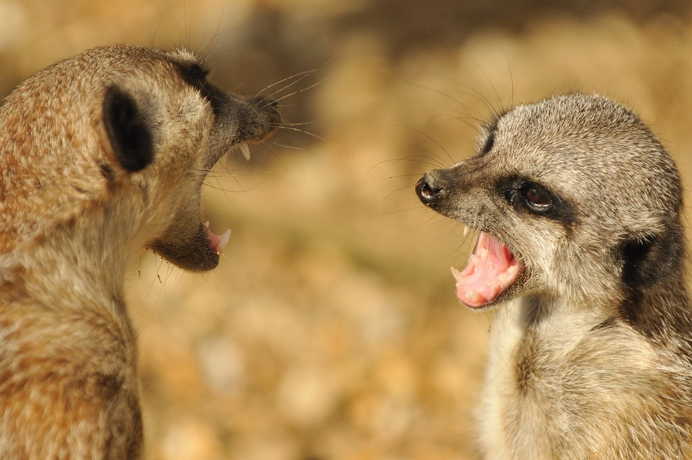
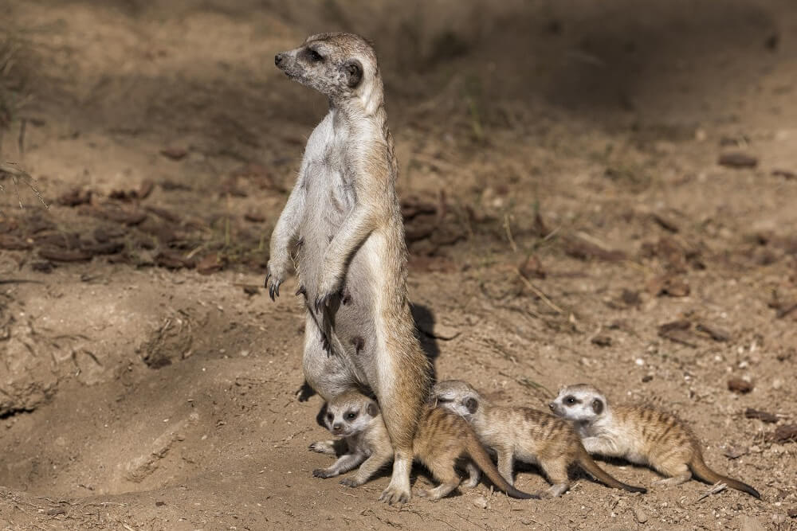
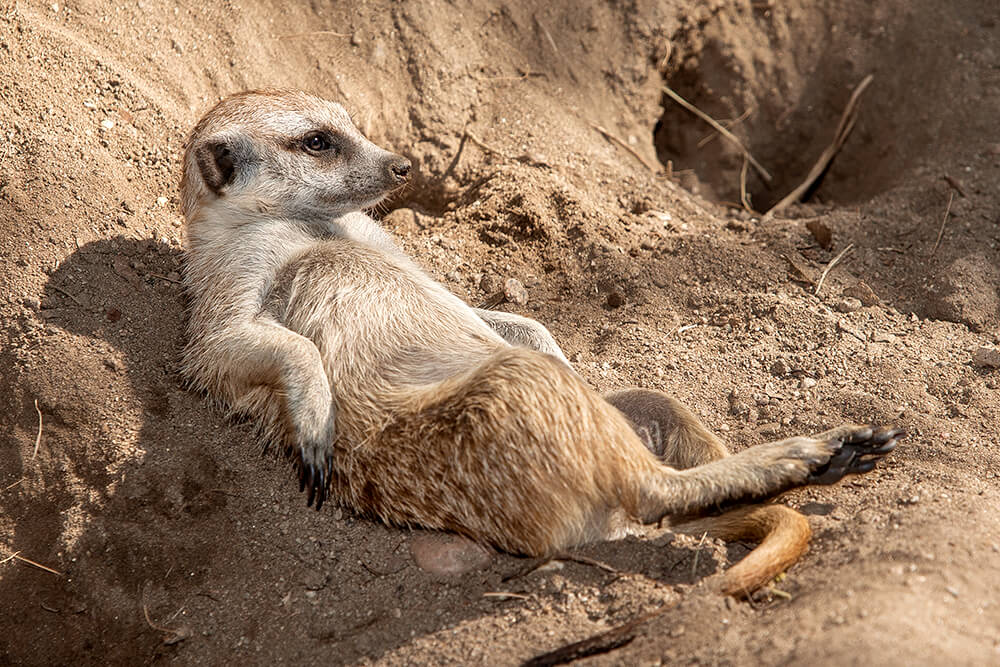

MEERKAT
-

There are few animals on Earth who work as well together as meerkats. These squirrel-size members of the mongoose family live in groups of different sizes, from as little as three to as big as 50 members. everyone in the mob participates in gathering food, keeping a look out for predators and taking care of the babies.
-

Meerkats are abundant throughout their range and are not considered threatened or endangered. But they live a very difficult life in the African desert, constantly threatened by hungry predators, rival meerkats, drought and burrow-flooding rainstorms.
-

Meerkats are omnivourse therefore can eat meat and plants. They find joy in insects such as grubs, termites, scorpians and much, much more.
-

Males initiate internal reproduction by fighting with the female. If the female resists his attempts to mount her, the male will grip her until she is submissive. Meerkats don't always stay with the same mate. During mating, the male grips the female around the middle to maintain his position.
-

Meerkats have a matriarchal society, with adult females generally slightly larger than males. The dominant female can have several litters a year, but usually she has babies, called pups, during times when there is plenty of food, which is generally during the rainy season (November through March). Pups are born with eyes and ears shut and are mostly hairless at birth. Their eyes open after two weeks, and pups start eating food other than milk at three weeks.
When they are four weeks old, the pups first venture out of their den. They are weaned by nine weeks. Young meerkats do not know what kind of food to eat, so their mother or another adult teaches them. Mom brings home whole food such as an insect or lizard and leaps around in front of the pups until they take the food from her mouth. She even brings home scorpions with their tails bitten off, so the young can learn how to kill them without getting hurt.
While adult meerkats have some immunity to scorpion stings, a scorpion’s large pincers can still do plenty of damage, and the pups have to learn to deal carefully with this dangerous food item. -

meerkats are diurnal nce the sun is up, they carefully emerge from their burrow and spend some time sunbathing and grooming. Meerkats have thin fur and dark skin on their stomachs that helps them control body temperature. They can lie on their backs and get quickly warmed by the sun or lie stomach down on a cool rock in the heat of midday. Once warmed up and ready to go, the meerkats forage for most of the day, perhaps stopping in the shade or a burrow during the hottest hours. Then they return to the main burrow to snuggle up for the night.